| 症状の訴え | 原因 |
| 「ものが2つに見える」 | ◎ 複視：外転神経麻痺（ウェルニッケ） |
| 「顔が痛い」 | 三叉神経痛（アルコールとの関連薄い） |
| 「飲み込みづらい」 | 嚥下障害（進行例・誤嚥） |
| 「目が閉じにくい」 | 顔面神経麻痺 |
| 「耳が聞こえづらい」 | 聴神経障害（アルコールとの関連薄い） |
| 微量元素 | 欠乏症状 |
| 亜鉛（Zn） | 皮膚炎・味覚障害・脱毛 |
| 鉄（Fe） | 貧血（小球性低色素性）・匙状爪・味覚障害（Plummer-Vinson症候群） |
| 銅（Cu） | 貧血・神経障害（類似B12欠乏） |
| セレン（Se） | 心筋症（克山病）・免疫低下 |
| ヨウ素 | 甲状腺機能低下症・甲状腺腫 |
| 検査 | 結果 |
| 血清銅 | 低下（正常は100〜140μg/dL） |
| 血清セルロプラスミン | 低下（正常は20〜35mg/dL） |
| 尿中銅排泄量 | 増加（>100μg/日） |
| 肝銅含量 | 増加（>250μg/g乾燥重量） |
| KF輪（スリットランプ検査） | 陽性（診断的価値高い） |
| 薬剤 | 機序 | 特徴 |
| ビスホスホネート | 破骨細胞抑制 | 第一選択。食道障害に注意 |
| デノスマブ | RANKL阻害抗体 | 骨折リスク↓ |
| テリパラチド（PTH製剤） | 骨形成促進 | 骨折多発例に有効 |
| SERM（ラロキシフェン） | 閉経後骨粗鬆症 | エストロゲン受容体作動薬 |
| ビタミンD・Ca | 補助療法 | 基本薬（単独では不十分） |
| 欠乏 | 症状 | この患者との関連 |
| ビタミンD | 骨軟化症・テタニー | ◎ 菜食主義→魚・乳製品なし |
| ビタミンB12 | 巨赤芽球性貧血・神経障害 | △ 菜食主義で起きるが手のこわばりではない |
| ビタミンB1 | ウェルニッケ・脚気 | × 菜食主義との関連薄い |
| 亜鉛 | 皮膚炎・味覚障害 | × 手のこわばりとは異なる |
| ビタミンE | 神経障害・溶血性貧血 | × 菜食主義でも比較的保たれる |
| 疾患 | 関節液外観 | 白血球数 | 結晶 |
| 正常 | 透明 | <200/mm³ | なし |
| 変形性関節症 | 黄色透明 | <2000 | なし |
| 偽痛風 | 黄白色・混濁 | >2000 | CPPD結晶（+菱形） |
| 化膿性関節炎 | 混濁・膿性 | >50000 | なし（培養+） |
| 痛風 | 黄白色・混濁 | >2000 | 尿酸塩結晶（針状） |
| 臓器 | 変化 | 目的 |
| 骨格筋 | アミノ酸放出（アラニン・グルタミン） | 糖新生の基質を供給 |
| 肝臓 | グルコース放出（グリコーゲン分解+糖新生） | 血糖維持 |
| 脂肪組織 | 遊離脂肪酸（FFA）放出 | エネルギー基質 |
| 肝臓 | ケトン体産生増加（FFAから） | 脳・心筋の代替エネルギー |
| 脳 | 短期：グルコース利用。長期：ケトン体利用 | グルコース節約 |
| 選択肢 | 正誤 | 理由 |
| ａ ケトン体が低下する | ✗ | 絶食→FFA増加→肝でケトン体産生↑ |
| ｂ 肝臓にグルコースが流入 | ✗ | 逆：肝からグルコースが放出される |
| ｃ 肝→骨格筋に乳酸 | ✗ | 逆：筋からの乳酸が肝に（Cori回路） |
| ｄ 骨格筋からアミノ酸放出 | ✓ | タンパク分解→糖新生基質 |
| ｅ 中枢神経でFFAを利用 | ✗ | FFAはBBBを通過できない（ケトン体は通過） |
| 選択肢 | 正誤 | 正しい内容 |
| ａ アルコール→尿酸排泄低下 | ✓ | 乳酸との競合阻害 |
| ｂ 高い糖質→体重減少 | ✗ | 高糖質→体重増加 |
| ｃ 2週絶食後輸液→マラスムス | ✗ | →リフィーディング症候群の可能性 |
| ｄ タンパク過剰→胆石形成 | ✗ | →高尿酸血症・腎障害 |
| ｅ 動物性脂肪過剰→LDL低下 | ✗ | →LDL↑（飽和脂肪酸→LDL上昇） |
| 疾患 | 特徴 | 否定理由 |
| 結晶誘発性関節炎（偽痛風） | ◎ 遊走性・高齢者 | |
| Behçet病 | 口腔・眼・皮膚・生殖器病変 | 高齢・足→頸椎は典型でない |
| 結核性脊椎炎 | 慢性経過・Pott変形 | 急性・遊走性ではない |
| 関節リウマチ | 対称性・慢性 | 急性・遊走性と異なる |
| 後縦靭帯骨化症 | 頸髄症・慢性 | 急性炎症ではない |
| 疾患 | 原因 | 特徴 |
| 腫瘍性骨軟化症 | FGF-23産生腫瘍 | 低P・骨折多発・腫瘍摘出で治癒 |
| 腎性骨異栄養症 | 腎不全 | 高P・低Ca・PTH↑ |
| 閉経後骨粗鬆症 | エストロゲン↓ | 骨密度↓・骨折（骨軟化ではない） |
| 偽性副甲状腺機能低下症 | PTH抵抗性 | 低Ca・高P・短指趾症 |
| 原発性副甲状腺機能亢進症 | PTH過剰 | 高Ca・低P・繊維性骨炎 |
| 症状 | 所見 |
| 眼球運動障害 | 外転神経麻痺→複視、眼振、核上性眼筋麻痺 |
| 失調 | 小脳性歩行失調、体幹失調 |
| 意識障害・見当識障害 | 無関心・無欲・混濁 |
| 記憶障害 | Korsakoff症候群への移行（作話） |
| 腱反射亢進 | みられない。脚気（末梢型）では腱反射消失 |
| 治療 | 評価 |
| 抗菌薬 | × 感染性関節炎でなければ不要 |
| 抗リウマチ薬 | × RAの治療薬、偽痛風には不適 |
| ヒアルロン酸関節内投与 | × 変形性関節症の治療 |
| ステロイド関節内投与 | △ NSAIDs禁忌時の代替 |
| NSAIDs内服 | ◎ 第一選択 |
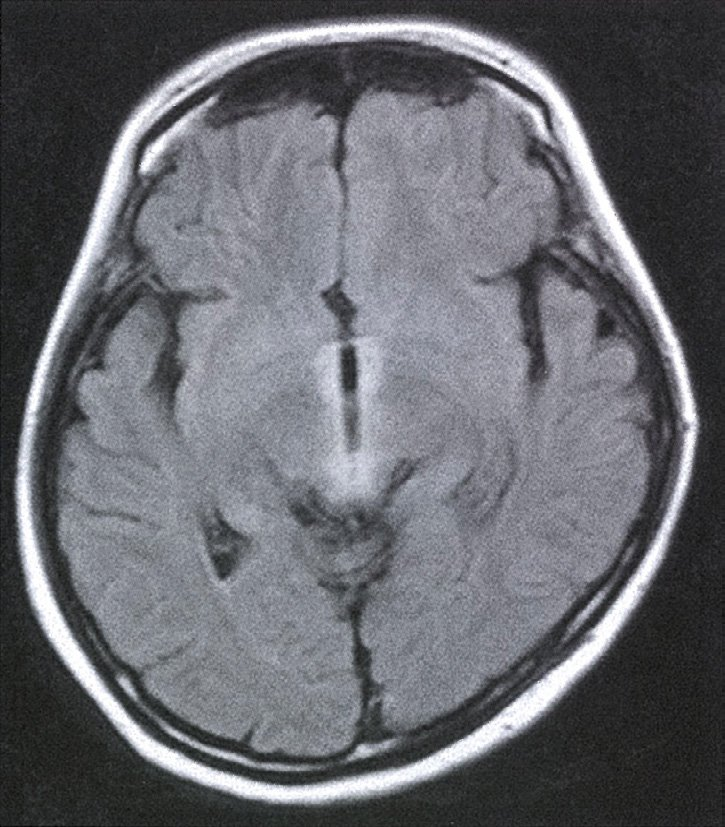
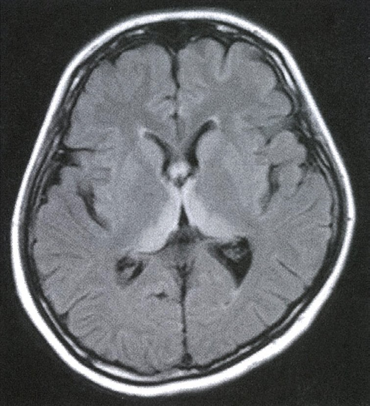
| 疾患 | MRI特徴 |
| ウェルニッケ脳症 | 乳頭体・視床・中脳水道周囲のT2/FLAIR高信号 |
| 一酸化炭素中毒 | 淡蒼球の対称性T2高信号（白質病変） |
| 単純ヘルペス脳炎 | 側頭葉内側（海馬・扁桃体）のFLAIR高信号 |
| インフルエンザ脳症 | 両側視床のADC低下（急性壊死性脳症） |
| CJD | 大脳皮質・基底核のDWI高信号（コルテックスリボン） |
| 選択肢 | 正誤 | 理由 |
| ａ 大脳基底核に銅沈着 | ✓ | 錐体外路症状の原因 |
| ｂ 常染色体優性遺伝 | ✗ | 常染色体劣性遺伝 |
| ｃ セルロプラスミン増加 | ✗ | セルロプラスミンは低下 |
| ｄ キレート薬で治療 | ✓ | D-ペニシラミンで銅を排泄 |
| ｅ 肝からの銅排泄障害 | ✓ | ATP7B変異→胆汁排泄障害 |
| 原因 | 機序 |
| 悪性貧血（自己免疫） | 内因子産生↓（壁細胞の抗体） |
| 胃全摘後 | 内因子産生なし→5年後に欠乏 |
| 回腸切除後 | B12吸収部位の喪失 |
| 厳格な菜食主義 | 食事からの摂取なし→数年後に欠乏 |
| 疾患 | 特徴 |
| ケトン性低血糖症 | 肝腫大なし・ケトーシス著明 |
| ムコ多糖症Ⅲ型 | 知的障害・骨変形（代謝産物蓄積） |
| 下垂体性小人症 | 低血糖軽微・GH低下 |
| 1型糖尿病 | 高血糖（低血糖ではない） |
| 糖原病Ⅰ型 | ◎ 低血糖＋肝腫大＋高TG＋高乳酸＋高尿酸 |
| 薬剤 | 主な副作用 |
| イソニアジド（INH） | 末梢神経炎（B6拮抗）・肝障害 |
| リファンピシン（RFP） | 肝障害・薬物相互作用・尿赤色化 |
| エタンブトール（EMB） | 視神経炎（色覚異常・視力低下） |
| ピラジナミド（PZA） | 肝障害・高尿酸血症 |
| ストレプトマイシン（SM） | 聴神経毒性・腎毒性 |
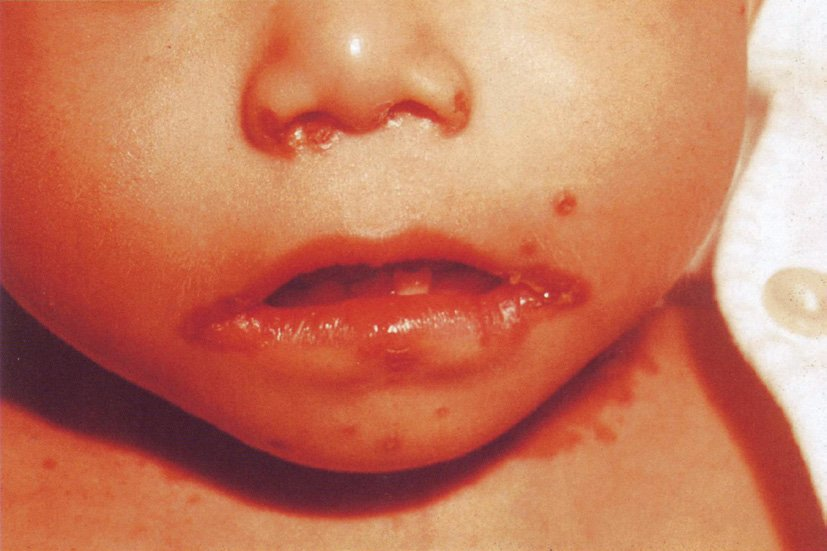
| 痛風 | 偽痛風 | |
| 結晶 | MSU（尿酸一ナトリウム） | CPPD（ピロリン酸Ca） |
| 顕微鏡像 | 針状・強陰性複屈折 | 菱形・弱陽性複屈折 |
| 好発部位 | 第一MTP（足趾） | 膝関節・手関節 |
| 性別 | 男性優位 | 高齢者（男女差少ない） |
| 誘因 | 飲酒・脱水・プリン体 | 手術・外傷・急性疾患 |
| 薬剤 | 評価 | 備考 |
| NSAIDs | ◎ 第一選択 | 急性炎症を鎮静 |
| コルヒチン | ◎ 代替（早期投与必須） | 微小管阻害→好中球遊走抑制 |
| 麻薬性鎮痛薬 | × 不適切 | |
| 尿酸合成阻害薬 | × 急性期禁忌 | 急性期は使用しない |
| グルココルチコイド | △ NSAIDs禁忌時 | 全身投与または関節内注射 |
| DMARDs | × 関節リウマチの薬 |
| 選択肢 | 正誤 | 正しい組合せ |
| ａ 葉酸→小球性貧血 | ✗ | 葉酸欠乏→巨赤芽球性貧血（大球性） |
| ｂ ニコチン酸→心不全 | ✗ | ニコチン酸（B3）欠乏→ペラグラ（3D：皮膚炎・下痢・認知症） |
| ｃ ビタミンA→夜盲 | ✓ | ロドプシン合成↓ |
| ｄ B1→腱反射亢進 | ✗ | B1欠乏→腱反射消失・低下（脚気） |
| ｅ B12→皮膚炎 | ✗ | B12欠乏→亜急性脊髄変性・巨赤芽球性貧血 |
| 誘因 | 機序 | 痛風との関連 |
| 飲酒 | 乳酸↑→尿酸排泄阻害＋プリン体摂取 | ◎ 誘因 |
| 激しい運動 | 筋肉のプリン体分解→尿酸産生↑ | ◎ 誘因 |
| 脱水 | 尿酸の尿中濃度↑→析出しやすい | ◎ 誘因 |
| 利尿薬（サイアザイド） | 腎での尿酸排泄競合的阻害 | ◎ 誘因 |
| スタチン | コレステロール合成阻害のみ | × 誘因にならない |
| 選択肢 | 正誤 | 正しい内容 |
| ａ マグネシウム→味覚障害 | ✗ | 亜鉛→味覚障害 |
| ｂ ビタミンA→ペラグラ | ✗ | ニコチン酸（B3）→ペラグラ；A→夜盲 |
| ｃ ビタミンC→出血傾向 | ✓ | 壊血病（Scurvy） |
| ｄ カルシウム→貧血 | ✗ | 鉄・B12・葉酸→貧血 |
| ｅ 亜鉛→夜盲 | ✗ | ビタミンA→夜盲；亜鉛→味覚障害・皮膚炎 |
| ビタミン | 欠乏症 | 認知障害機序 |
| B1（チアミン） | Wernicke-Korsakoff症候群 | 乳頭体・視床の壊死→記憶障害・失見当識・作話 |
| B3（ナイアシン） | ペラグラ（3D） | 皮膚炎・下痢・認知症（Dementia） |
| B12（コバラミン） | 亜急性連合性脊髄変性症 | 脊髄後索・側索障害→認知機能低下・認知症 |
| B6 | 末梢神経炎 | 認知障害は軽微 |
| VA | 夜盲 | 認知障害なし |
| VC | 壊血病 | 認知障害なし（主に出血傾向） |
| 欠乏物質 | 症状 | 正誤 |
| 匙状爪（スプーン爪） | 鉄 | ◯ 鉄欠乏性貧血の所見（銅ではない） |
| 味覚異常 | 亜鉛 | ✓ 亜鉛欠乏の特徴的症状 |
| 出血傾向 | ビタミンK or C | ×（Aではない） |
| ペラグラ | ビタミンB3（ナイアシン） | ×（B2ではない） |
| 骨軟化症 | ビタミンD | ×（Cではない） |
| 選択肢 | 評価 |
| ａ 関節液検査 | ◎ 確定診断・緊急の感染除外のため最優先 |
| ｂ 膝関節造影CT | × 結晶や感染の直接診断にならない |
| ｃ 下肢ギプス包帯固定 | × 急性炎症の固定は不要 |
| ｄ 広域抗菌薬点滴 | × 診断前の投与は不適切（関節液培養を先に） |
| ｅ ステロイド関節内投与 | × 感染除外前にステロイドは危険 |
| 薬剤 | 主な副作用 |
| 甲状腺ホルモン | 心動悸・不整脈（過剰投与） |
| PPI（プロトンポンプ阻害薬） | 胃腸症状（むしろ逆流性食道炎を治療） |
| 経口ビスホスホネート | 食道炎・食道潰瘍→嚥下困難 |
| BDZ系睡眠薬 | 筋弛緩・転倒・依存 |
| ACE阻害薬 | ドライコフ（乾性咳嗽） |
| 合併症 | 原因 | 対策 |
| 低リン血症 | 細胞内取り込み↑ | 血中P測定・リン補充 |
| 低カリウム血症 | 細胞内移行 | K補充 |
| 低マグネシウム血症 | 細胞内移行 | Mg補充 |
| 心不全・浮腫 | 急激な循環血液量増加 | ゆっくり栄養補給 |
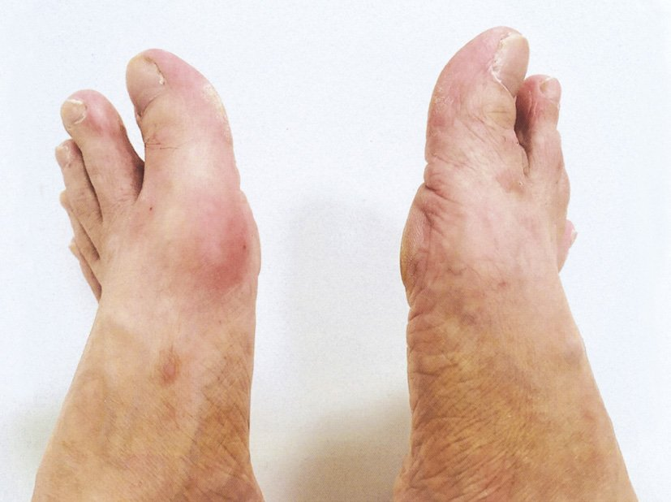
| ビタミン | 欠乏症状 | リスク |
| B1 | ウェルニッケ・脚気 | ◎ 炭水化物偏食→消費↑ |
| D | 骨軟化症 | ○ 日光浴なし→合成↓ |
| B12 | 神経障害・貧血 | △ 菜食主義の場合 |
| A | 夜盲 | △ 野菜摂取不足 |
| 誘因 | 機序 | 判定 |
| 禁煙 | 痛風と直接関連なし | × 誘因でない |
| ビール大量摂取 | プリン体多＋アルコール→尿酸産生↑排泄↓ | ✓ |
| 急激な激しい運動 | 筋肉のプリン体分解→尿酸産生↑ | ✓ |
| 乳製品大量摂取 | 乳タンパクは尿酸排泄を促進（保護的） | × 誘因でない |
| 高尿酸血症治療薬の開始 | 血清尿酸の急変動→結晶析出↑ | ✓ |
| 型 | 主症状 | 特徴 |
| 末梢神経型（乾性脚気） | 感覚障害・腱反射消失・筋力低下 | 末梢からの神経障害 |
| 心臓型（湿性脚気） | 高拍出性心不全・浮腫 | 心拍出量↑（血管拡張） |
| 選択肢 | 正誤 |
| マグネシウム→味覚障害 | ✗（亜鉛→味覚障害） |
| ビタミンA→ペラグラ | ✗（B3ナイアシン→ペラグラ） |
| ビタミンC→出血傾向 | ✓（壊血病） |
| カルシウム→貧血 | ✗（Fe/B12/葉酸→貧血） |
| 亜鉛→夜盲 | ✗（ビタミンA→夜盲） |
| 食品 | プリン体含有 | 痛風での制限 |
| 胡椒 | 微量 | 不要 |
| 食塩 | なし | 不要（むしろ水分+塩で尿酸排泄促進） |
| レバー | 非常に多い（300mg/100g超） | ◎ 必ず制限 |
| コーヒー | 少量 | 不要（むしろ痛風予防の可能性） |
| マーガリン | なし | 不要 |
| 薬剤 | 使用時期 | 機序 |
| コルヒチン | 急性期（早期投与！） | 微小管阻害→白血球遊走抑制 |
| NSAIDs | 急性期 | COX阻害→プロスタグランジン↓ |
| 尿酸合成阻害薬 | 寛解後の長期管理 | キサンチンオキシダーゼ阻害 |
| 尿酸排泄促進薬 | 寛解後の長期管理（腎機能正常） | URAT1阻害 |
| ビタミン | 欠乏症状 | ふらつきとの関連 |
| B1 | Wernicke/脚気 | ◎ 小脳失調・感覚性失調 |
| B12 | 亜急性脊髄変性症 | ○ 深部感覚↓→感覚性失調 |
| D | 骨軟化症・筋力低下 | △ 筋力低下によるふらつき |
| A | 夜盲 | △ 暗所での視覚障害 |
| 選択肢 | 正誤 |
| GnRHアゴニスト→子宮筋腫 | ✓（LH-RHアナログ→ダウンレギュレーション→エストロゲン↓） |
| カルシトニン→高Ca血症 | ✓（カルシトニン→破骨細胞抑制→Ca↓） |
| PTH製剤→骨粗鬆症 | ✓（テリパラチドは骨粗鬆症治療薬） |
| DDAVP→高血圧症 | ✗（DDVAPは尿崩症・夜尿症） |
| GLP-1製剤→糖尿病 | ✓（GLP-1受容体作動薬は2型糖尿病治療薬） |
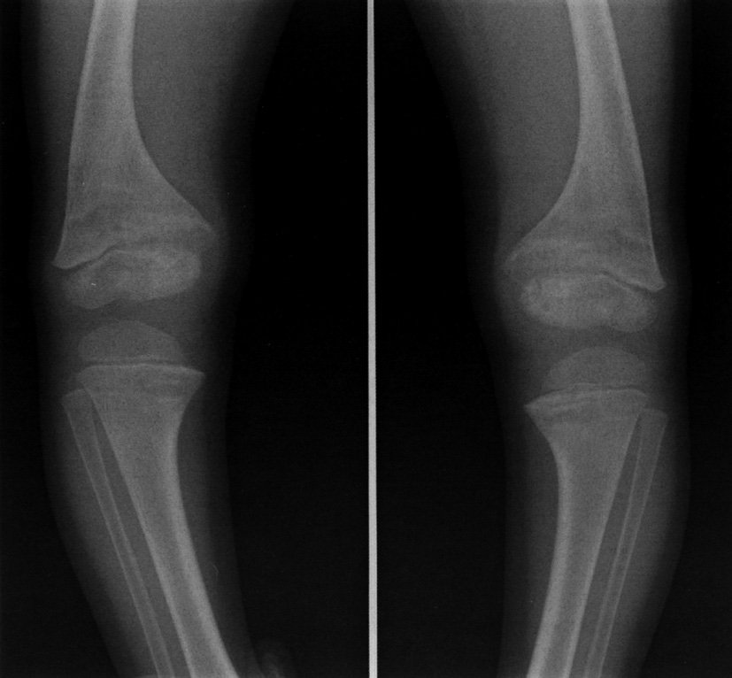
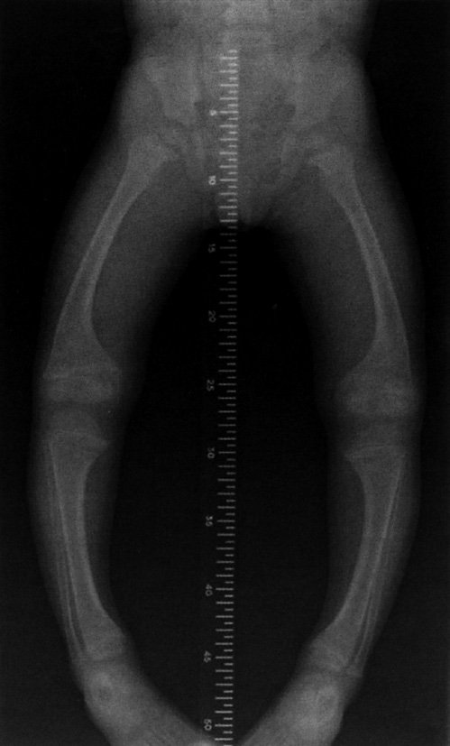
| 項目 | 変化 | 理由 |
| 筋肉量 | ↓（廃用性筋萎縮） | 運動刺激がなく筋タンパク分解 |
| 肺活量 | ↓ | 呼吸筋の廃用・肺拡張不全 |
| 心拍出量 | ↓ | 起立耐容能低下（起立性低血圧） |
| 関節可動域 | ↓（拘縮） | 関節包・靭帯の線維化 |
| 血清Ca濃度 | ↑（高Ca血症） | 骨吸収↑→骨からCa溶出 |
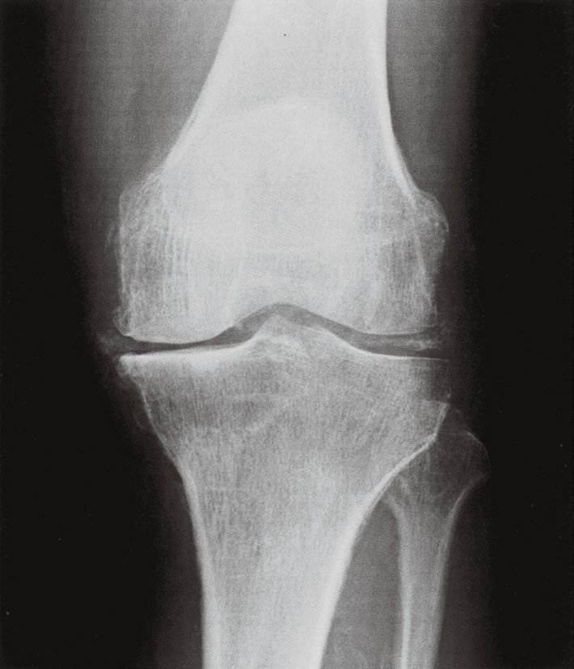
| 結晶 | 疾患 | 特徴 |
| 尿酸ナトリウム（MSU） | 痛風 | 針状・強陰性複屈折 |
| リン酸カルシウム | 石灰沈着性腱炎 | 肩峰下に多い |
| シュウ酸カルシウム | 尿路結石・腎石灰化 | 関節炎は稀 |
| ピロリン酸カルシウム（CPPD） | 偽痛風 | 菱形・弱陽性複屈折 |
| ハイドロキシアパタイト | 石灰沈着性腱板炎 | 関節炎も起こしうる |
| 選択肢 | 正誤 |
| ビタミンA欠乏→夜尿症 | ✗ 正しくは夜盲症 |
| ビタミンB1欠乏→Wernicke脳症 | ✓ |
| ビタミンB12欠乏→巨赤芽球性貧血 | ✓ |
| カルシウム欠乏→骨粗鬆症 | ✓ |
| 亜鉛欠乏→味覚障害 | ✓ |
| 疾患 | B1欠乏との関連 |
| ペラグラ | × ナイアシン（B3）欠乏 |
| Leigh脳症 | × ミトコンドリア機能障害（PDH欠損等、B1とは別） |
| Korsakoff症候群 | ◎ ウェルニッケ脳症の後遺症（B1欠乏） |
| 橋中心髄鞘崩壊症（CPM） | × 急速な低Na補正が原因 |
| 亜急性脊髄連合変性症 | × ビタミンB12欠乏 |
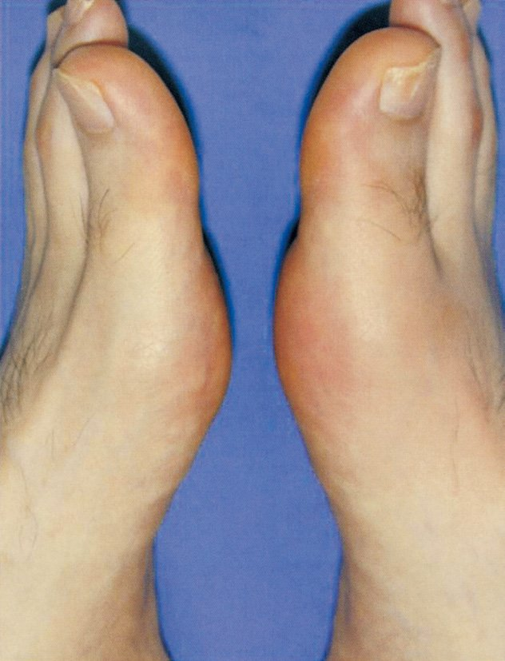
| 薬剤 | 評価 | 備考 |
| コルヒチン | ◎ 使用 | 微小管阻害→好中球遊走抑制。早期投与が重要 |
| アザチオプリン | × 使用しない | 免疫抑制薬（臓器移植・RA等） |
| アロプリノール | × 急性期禁忌 | 尿酸合成阻害薬（長期管理用） |
| インフリキシマブ | × 使用しない | 抗TNF-α（関節リウマチ等） |
| NSAIDs | ◎ 使用 | COX阻害→プロスタグランジン↓→炎症鎮静 |
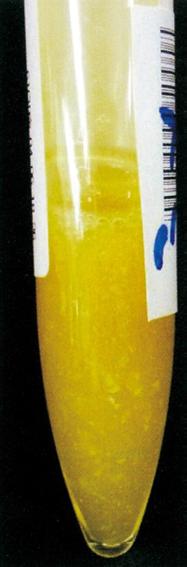
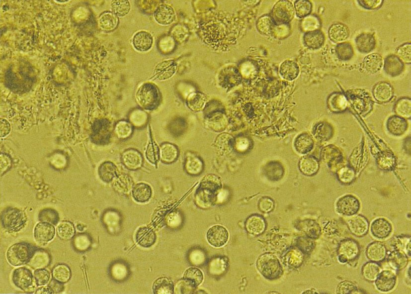
| 疾患 | 特徴 | この患者との関連 |
| 痛風 | 高尿酸血症・アルコール関連 | ◎ |
| 偽痛風 | 高齢者・膝単関節 | △ 多関節には合わない |
| 化膿性関節炎 | 発熱・全身症状強い | △ 多関節は稀 |
| 変形性関節炎 | 慢性・高齢・X線 | △ 急性ではない |
| 反応性関節炎 | 感染先行・下肢大関節 | × 感染歴なし |
| 選択肢 | 正誤 | 理由 |
| ａ ヒトの体内で合成 | ✗ | B12は動物性食品から摂取。ヒトは合成できない |
| ｂ 内因子と結合 | ✓ | 胃壁細胞由来のIF |
| ｃ 回腸末端部で吸収 | ✓ | IF-B12複合体→回腸末端のcubilin受容体 |
| ｄ トランスフェリンと輸送 | ✗ | トランスフェリンは鉄輸送タンパク |
| ｅ RNA合成に利用 | ✗ | B12はDNA合成（核酸合成）に関与 |
| 疾患 | 関連 | 備考 |
| Leigh脳症 | × なし | ミトコンドリア遺伝子変異（小児） |
| Wernicke脳症 | ◎ 直接関連 | B1欠乏（アルコール最大の原因） |
| Korsakoff症候群 | ◎ 直接関連 | Wernicke後遺症 |
| Kartagener症候群 | × なし | 気管支拡張症＋内臓逆位（繊毛運動異常） |
| Lambert-Eaton症候群 | × なし | 小細胞肺癌関連（P/Q型VGCCに対する自己抗体） |
| 原因 | 機序 | 関連 |
| 鉄欠乏性貧血 | 味蕾の細胞更新↓（Fe→DNA合成） | ◎ |
| 亜鉛欠乏 | 味蕾に必要な酵素の補因子 | ◎（最頻） |
| Ramsay Hunt症候群 | 帯状疱疹→顔面神経→鼓索神経（味覚線維）障害 | ◎ |
| 急性扁桃炎 | 嚥下痛・炎症→直接的味覚障害は稀 | × |
| 急性副鼻腔炎 | 嗅覚障害（風味障害）が主 | × |
| ビタミンC欠乏 | 壊血病（出血傾向）→直接の味覚障害なし | × |
| 栄養素 | 欠乏症 | 選択肢の正誤 |
| マグネシウム | テタニー・筋痙攣 | ×（味覚障害は亜鉛） |
| ビタミンA | 夜盲症・乾燥性角結膜炎 | ×（ペラグラはB3） |
| ビタミンC | 壊血病（出血傾向） | ✓ |
| カルシウム | 骨粗鬆症・テタニー | ×（貧血はFe/B12/葉酸） |
| 亜鉛 | 味覚障害・皮膚炎 | ×（夜盲はVitA） |
| ビタミン | 骨への作用 |
| A | 骨代謝に関与（過剰は骨密度低下） |
| B1 | 骨代謝への直接作用は少ない |
| B12 | 骨代謝への直接作用は少ない |
| E | 抗酸化（骨への直接作用は少ない） |
| K | ◎ オステオカルシンのGlaタンパク化→骨形成促進 |
| 所見 | Wilson病 | 理由 |
| アミノ酸尿 | ◎ あり | Fanconi症候群→尿細管障害→アミノ酸排泄↑ |
| 溶血性貧血 | ◎ あり | 銅の直接毒性→赤血球傷害 |
| 血清銅 | ◎ 低値 | 遊離銅↑だが総銅↓（セルロプラスミン↓） |
| 血清尿酸の高値 | × みられない | Fanconi症候群→尿酸排泄↑→低尿酸血症 |
| 血清セルロプラスミン低値 | ◎ あり | ATP7B変異→CP産生↓ |
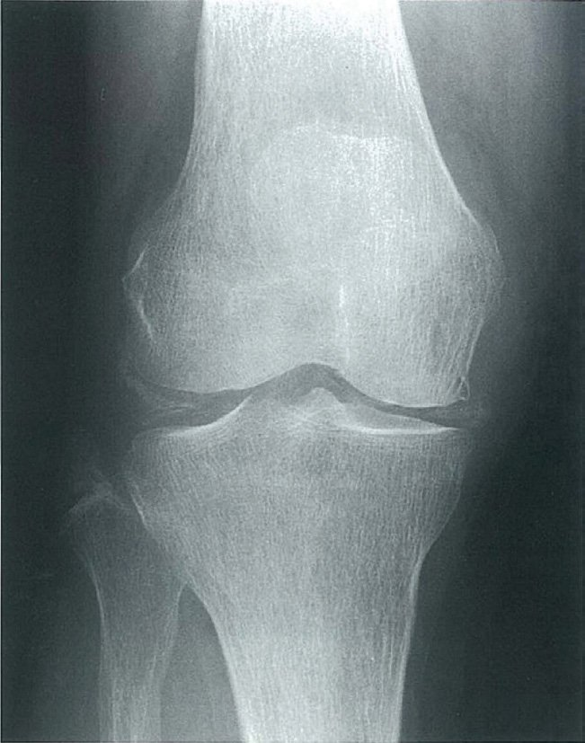
| 疾患 | 特徴 | この症例 |
| 痛風 | 男性・第一MTP・尿酸高値 | × 高齢女性・膝 |
| 偽痛風 | 高齢・膝・X線石灰化・反復性 | ◎ |
| 特発性骨壊死 | MRI：骨壊死所見 | × X線で石灰化 |
| 変形性膝関節症 | 慢性・体重負荷で悪化 | × 急性炎症（発赤・熱感） |
| 化膿性膝関節炎 | 発熱・白血球著増・関節液培養+ | △ 除外が必要 |
| 選択肢 | 評価 |
| 血漿交換 | × TTP/HUS・重症GBSなどに使用 |
| ブドウ糖液静注 | × グルコースを先に投与すると悪化 |
| ビタミンB1静注 | ◎ 第一選択・即座に投与 |
| 免疫グロブリン | × GBS・ITPなどに使用 |
| ステロイドパルス | × 多発性硬化症などに使用 |
| 微量元素 | 味覚障害機序 | 判定 |
| 鉄（Fe） | DNA合成・細胞分裂に必要→味蕾細胞の更新↓ | ◎ |
| 銅（Cu） | 直接の味覚障害との関連は薄い | × |
| 亜鉛（Zn） | 炭酸脱水酵素等の補因子→味蕾機能↓ | ◎ |
| ヨウ素（I） | 甲状腺ホルモン合成に必要（味覚障害は直接関連なし） | × |
| セレン（Se） | 抗酸化酵素（グルタチオンペルオキシダーゼ）補因子 | × |
| ホルモン | 骨への作用 | 判定 |
| エストロゲン | 骨保護（破骨細胞抑制） | × 低下すると骨密度↓ |
| カルシトニン | 骨吸収抑制（破骨細胞阻害） | × 過剰は骨を保護 |
| 抗利尿ホルモン（ADH） | 骨代謝への直接作用は弱い | × |
| 副甲状腺ホルモン（PTH） | 過剰→破骨細胞↑→骨吸収↑→骨密度↓ | ◎ |
| 副腎皮質ホルモン（ステロイド） | 骨芽細胞↓・骨吸収↑→ステロイド性骨粗鬆症 | ◎ |
| 薬剤 | 機序 | 急性期使用 | 備考 |
| コルヒチン | 微小管阻害→白血球遊走抑制 | ◎ | 早期（24時間以内）が最も有効 |
| プロベネシド | URAT1阻害→尿酸排泄促進 | × 急性期禁忌 | 血清尿酸変動→悪化 |
| インドメタシン（NSAIDs） | COX阻害→プロスタグランジン↓ | ◎ | インドメタシンが代表的NSAIDs |
| アロプリノール | XO阻害→尿酸合成抑制 | × 急性期禁忌 | 血清尿酸変動→悪化 |
| ベンズブロマロン | URAT1阻害→尿酸排泄促進 | × 急性期禁忌 | 尿酸降下薬 |
| 疾患/状態 | 低血糖の機序 |
| 低出生体重児 | グリコーゲン貯蔵少・哺乳不足 |
| 糖尿病母体児 | 高インスリン状態→出生後の低血糖 |
| 下垂体前葉機能低下症 | GH・コルチゾール欠乏→糖新生↓ |
| 糖原病Ⅰ型 | G6Pase欠損→グルコース放出障害 |
| 褐色細胞腫 | カテコールアミン↑→高血糖（低血糖をきたさない） |
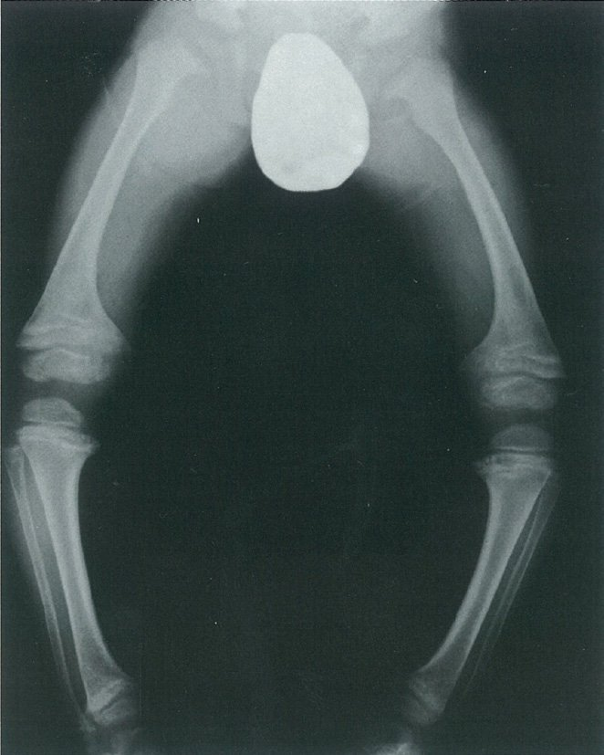
| 検査項目 | 予想 | 理由 |
| リン（P） | ↓（低値） | VitD欠乏→腸管P吸収↓、PTH↑→腎P排泄↑ |
| ALP | ↑（高値） | くる病では骨形成不全→骨芽細胞が代償的にALP産生↑ |
| 25(OH)D3 | ↓（低値） | VitD欠乏そのもの |
| PTH | ↑（高値） | 低Ca→代償性PTH分泌↑（二次性副甲状腺機能亢進症） |
| CK | 変化なし | 骨・筋疾患（DMなど）で↑、くる病では通常正常 |
| 疾患 | FLAIR特徴部位 |
| ペラグラ | 脊髄後索T2高信号（B3欠乏） |
| 低血糖発作 | 広範な皮質・深部核の拡散制限 |
| Wernicke脳症 | 乳頭体・視床・中脳水道周囲 |
| CO中毒 | 淡蒼球の対称性FLAIR高信号 |
| シンナー中毒 | 小脳・皮質白質・橋の高信号 |
| 食品/栄養素 | 痛風との関係 | 制限 |
| プリン体 | 核酸代謝→尿酸産生↑ | ◎ 制限 |
| アルコール | 乳酸産生→尿酸排泄↓＋プリン体含有 | ◎ 制限（特にビール） |
| 水分 | 尿酸排泄促進 | × むしろ多く摂取（>2L/日） |
| 食塩 | 尿酸代謝との直接関連薄い | △ 高血圧合併時は制限 |
| 食物繊維 | 尿酸に影響なし | × むしろ腸内細菌叢改善で好影響 |
| 疾患/状態 | 骨粗鬆症 | 機序 |
| Addison病 | × なし | コルチゾール↓→骨粗鬆症はステロイド過剰で起こる |
| 原発性アルドステロン症 | × なし | 骨代謝への直接影響は弱い |
| 甲状腺機能亢進症 | ◎ あり | 甲状腺ホルモン↑→破骨細胞活性↑→骨吸収優位→骨量↓ |
| 性腺機能低下症 | ◎ あり | エストロゲン/テストステロン↓→破骨細胞制御↓→骨吸収↑ |
| 褐色細胞腫 | × 直接は少ない | カテコールアミン↑の骨への直接作用は弱い |
| ビタミン | 過剰症 | 特記事項 |
| ナイアシン（B3） | 顔紅潮・肝障害（大量時） | 水溶性だが大量摂取で問題 |
| ビタミンA | 頭蓋内圧上昇・催奇形性 | ◎ 特に妊婦に注意 |
| ビタミンB1 | ほぼなし | 水溶性→尿中排泄 |
| ビタミンC | 腎結石（大量時） | 通常は過剰症なし |
| ビタミンD | 高カルシウム血症 | ◎ 腎機能低下者は特に注意 |
| ビタミン | 抗酸化機序 | 作用する場所 |
| A | 弱い抗酸化 | β-カロテンが活性酸素消去 |
| B1 | 直接の抗酸化作用なし | 補酵素機能 |
| B2 | 直接の抗酸化作用なし | FADとしてGSH還元酵素の補酵素 |
| C（アスコルビン酸） | 強力な水溶性抗酸化 | 細胞外・水相・Eを再活性化 |
| E（α-トコフェロール） | 強力な脂溶性抗酸化 | 細胞膜の脂質過酸化連鎖を遮断 |
| 薬剤 | 評価 | 適応疾患 |
| キレート薬（D-ペニシラミン） | ◎ | Wilson病（銅キレート） |
| シクロスポリン | × Wilson | 免疫抑制薬（臓器移植等） |
| インターフェロン | × Wilson | B型・C型肝炎 |
| 免疫グロブリン | × Wilson | ITP・GBS・川崎病 |
| ステロイド | × Wilson | 自己免疫性肝炎に有効（Wilsonでは禁忌ではないが第一選択ではない） |
| リスク因子 | 機序 | この患者 |
| 喫煙 | 骨芽細胞機能阻害・エストロゲン↓ | ◎ 20本/日40年 |
| 脂肪肝 | 直接の関連は弱い | × 記載なし |
| 高血圧 | 直接の関連は弱い | × 血圧180/110だが骨粗鬆症との直接関係は薄い |
| 運動不足 | 骨への機械的刺激↓→骨形成↓ | ◎ 運動はしていない |
| 脂質異常症 | 直接の関連は弱い | × 記載なし |
| 疾患 | 否定理由 |
| 子癇 | 痙攣・高血圧が前景（視覚症状・失調は非典型） |
| 多発性硬化症 | 通常は単一神経症状から始まる（若い女性に多いが） |
| 重症筋無力症 | 筋力低下・眼瞼下垂（失調・見当識障害ではない） |
| Wernicke脳症 | ◎ 三徴揃う＋悪阻後のB1欠乏コンテキスト |
| GBS | 下行性麻痺・感覚障害（急性期は錯乱ではなく麻痺） |
| 選択肢 | 正誤 | 正しい内容 |
| アスコルビン酸→血栓症 | ✗ | ビタミンC欠乏→壊血病（出血傾向）。血栓ではない |
| ニコチン酸→下痢 | ✓ | ペラグラの3D：皮膚炎・下痢・認知症 |
| 葉酸→赤血球増加症 | ✗ | 葉酸欠乏→巨赤芽球性貧血（赤血球減少） |
| マグネシウム→味覚障害 | ✗ | Mg欠乏→テタニー・筋痙攣。味覚障害は亜鉛 |
| リン→糖尿病 | ✗ | リン欠乏→骨軟化症・筋力低下。糖尿病との関連なし |
| 選択肢 | 正誤 | 理由 |
| ａ 膝蓋腱反射の亢進 | ✗ | B1欠乏→腱反射消失/低下（末梢神経障害） |
| ｂ 心拍出量の増加 | ✓ | 高拍出性心不全：末梢血管拡張→代償性心拍出量↑ |
| ｃ 血中乳酸値の低下 | ✗ | B1欠乏→PDH障害→乳酸蓄積→乳酸増加 |
| ｄ 末梢血管抵抗の上昇 | ✗ | 末梢血管拡張→抵抗低下 |
| ｅ 疼痛を伴う舌腫大 | ✗ | ペラグラ（B3欠乏）の症状 |
| 選択肢 | 正誤 | 理由 |
| ａ 妄想 | ✗ | Korsakoff特有の症状ではない |
| ｂ 認知症 | ✗ | 前頭葉・人格は保たれる（全般的認知症とは異なる） |
| ｃ 意識障害 | ✗ | Wernickeの症状。Korsakoffでは意識清明 |
| ｄ 失見当識 | ✓ | 時間・場所の認識障害 |
| ｅ 記銘障害 | ✓ | 近時記憶の著しい障害（新しいことが覚えられない） |